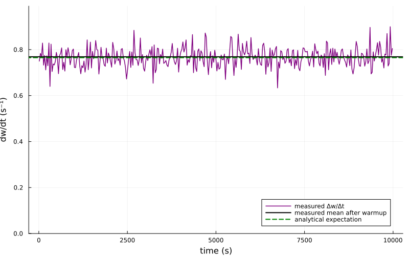
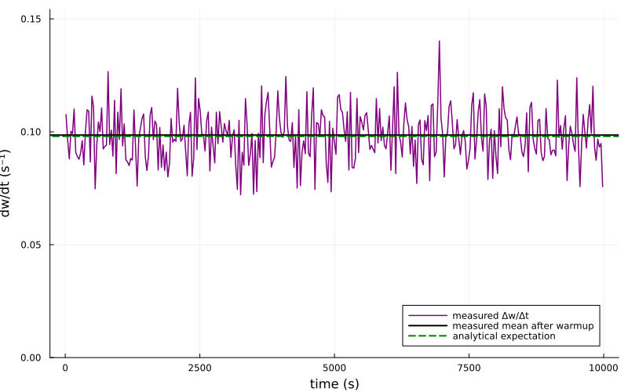
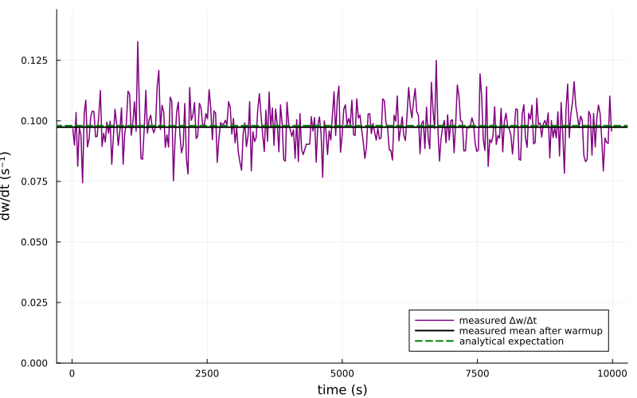

Test plasticity rules
Here I use non-interacting connections and fixed rates to test the dw/dt for different plasticity rules in the simplest possible way.
Test Vogels Sprekeler Rule
Initialization
using Random
using Statistics
using Plots
using HawkesPlasticNetworks
global const H = HawkesPlasticNetworks
Random.seed!(0);We use one inhibitory presynaptic neuron and one excitatory postsynaptic neuron. The connection participates in plasticity but does not contribute to either neuron's firing rate. Consequently, the external inputs set two independent Poisson rates exactly.
rate_pre = 17.0
rate_post = 55.0
τ_exc = 0.1
τ_inh = 0.05
η = 1E-3
r_target = 10.0
τ_plasticity = 0.08
initial_weight = 1000.0
monitor_interval = 30.0
simulation_end = 10_000.0
population_exc = H.PopulationExpKernelExcitatory(
1,τ_exc;label="exc")
population_inh = H.PopulationExpKernelInhibitory(
1,τ_inh;label="inh");Connections use post <- pre ordering, so this is the inhibitory-to- excitatory connection.
weights = fill(initial_weight,1,1)
plasticity = H.PlasticityVogelsSprekeler(
η,r_target,τ_plasticity,weights)
connection_inh_exc = H.ConnectionNonInteracting(
population_exc,weights,population_inh;
plasticity_rules=(plasticity,))
connected_exc = H.ConnectedPopulationExpKernel(
population_exc,[rate_post],
(connection_inh_exc,population_inh))
connected_inh = H.ConnectedPopulationExpKernel(
population_inh,[rate_pre]);The weight recorder runs after spike-triggered plasticity and records whenever at least monitor_interval seconds have elapsed. Recording times can therefore differ slightly from exact multiples of monitor_interval.
recorder_weight = H.WeightMatrixRecorder(
connection_inh_exc.weights,monitor_interval,simulation_end)
network = H.RecurrentNetworkExpKernel(
(connected_exc,connected_inh),(recorder_weight,));Run the simulation
t_now = 0.0
H.reset!(network)
H.reset!(plasticity)
while t_now < simulation_end
global t_now = H.dynamics_step!(t_now,network)
end
weight_content = H.get_content(recorder_weight)
weight_times = weight_content.times
weight_values = vec(weight_content.weights[:,1,1]);Measure the average connection increment per second
Each point is the average connection increment during one recorded interval, converted to a per-second rate using the interval's actual duration.
interval_starts = weight_times[1:end-1]
interval_ends = weight_times[2:end]
interval_midpoints = (interval_starts .+ interval_ends)./2
dw_dt = diff(weight_values)./diff(weight_times);We retain the complete time series in the plot, but exclude the first third of the simulation when estimating its steady average. An interval that overlaps the warmup boundary is excluded as well.
warmup_end = simulation_end/3
steady_state_idxs = interval_starts .>= warmup_end
if !any(steady_state_idxs)
error("No weight intervals remain after the warmup")
end
mean_dw_dt = mean(dw_dt[steady_state_idxs]);Compare with the analytical expectation
The target-rate term is applied when the presynaptic neuron fires. The trace contributions from pre- and postsynaptic spikes each supply half of the rate product, giving the independent-Poisson expectation
\[\frac{\mathrm{E}[\Delta w]}{\Delta t} = \eta(-r_{\mathrm{target}}r_{\mathrm{pre}} + r_{\mathrm{pre}}r_{\mathrm{post}}).\]
expected_dw_dt =
η*(-r_target*rate_pre + rate_pre*rate_post)
println("Average measured dw/dt after warmup: ",mean_dw_dt)
println("Expected dw/dt: ",expected_dw_dt)
plot(
interval_midpoints,dw_dt;
label="measured Δw/Δt",
color=:purple,
linewidth=1.5,
xlabel="time (s)",
ylabel="dw/dt (s⁻¹)",
size=(800,500),
ylims=(0.0,1.1*maximum(dw_dt)),
legend=:bottomright)
hline!(
[mean_dw_dt];
label="measured mean after warmup",
color=:black,
linewidth=2)
hline!(
[expected_dw_dt];
label="analytical expectation",
color=:green,
linestyle=:dash,
linewidth=2)
Test Asymmetric STDP
We now build a new network from scratch with one presynaptic and one postsynaptic excitatory neuron. As above, a non-interacting connection lets plasticity observe both spike trains without changing their externally fixed and independent Poisson rates.
rate_pre_asym = 17.0
rate_post_asym = 55.0
τ_pre_asym = 0.05
τ_post_asym = 0.1
η_asym = 1E-3
B_asym = 0.2
αpre_asym = -2.0
αpost_asym = -1.0
τ_plus_asym = 0.08
γ_asym = 2.0
initial_weight_asym = 1000.0
monitor_interval_asym = 30.0
simulation_end_asym = 10_000.0
population_pre_asym = H.PopulationExpKernelExcitatory(
1,τ_pre_asym;label="pre_asym")
population_post_asym = H.PopulationExpKernelExcitatory(
1,τ_post_asym;label="post_asym")
weights_asym = fill(initial_weight_asym,1,1)
plasticity_asym = H.PlasticityAsymmetricSTDP(
η_asym,B_asym,αpre_asym,αpost_asym,
τ_plus_asym,γ_asym,weights_asym)
connection_asym = H.ConnectionNonInteracting(
population_post_asym,weights_asym,population_pre_asym;
plasticity_rules=(plasticity_asym,))
connected_post_asym = H.ConnectedPopulationExpKernel(
population_post_asym,[rate_post_asym],
(connection_asym,population_pre_asym))
connected_pre_asym = H.ConnectedPopulationExpKernel(
population_pre_asym,[rate_pre_asym])
recorder_weight_asym = H.WeightMatrixRecorder(
connection_asym.weights,monitor_interval_asym,simulation_end_asym)
network_asym = H.RecurrentNetworkExpKernel(
(connected_post_asym,connected_pre_asym),(recorder_weight_asym,));Run the asymmetric-STDP simulation
t_now_asym = 0.0
H.reset!(network_asym)
H.reset!(plasticity_asym)
while t_now_asym < simulation_end_asym
global t_now_asym = H.dynamics_step!(t_now_asym,network_asym)
end
weight_content_asym = H.get_content(recorder_weight_asym)
weight_times_asym = weight_content_asym.times
weight_values_asym = vec(weight_content_asym.weights[:,1,1]);Measure the asymmetric-STDP drift
interval_starts_asym = weight_times_asym[1:end-1]
interval_ends_asym = weight_times_asym[2:end]
interval_midpoints_asym =
(interval_starts_asym .+ interval_ends_asym)./2
dw_dt_asym = diff(weight_values_asym)./diff(weight_times_asym)
warmup_end_asym = simulation_end_asym/3
steady_state_idxs_asym = interval_starts_asym .>= warmup_end_asym
if !any(steady_state_idxs_asym)
error("No asymmetric-STDP weight intervals remain after the warmup")
end
mean_dw_dt_asym = mean(dw_dt_asym[steady_state_idxs_asym]);For independent Poisson spike trains, each normalized trace has a mean equal to its population's rate. The depression and potentiation coefficients sum to B_asym, so
\[\frac{\mathrm{E}[\Delta w]}{\Delta t} = \eta\left( \alpha_{\mathrm{pre}}r_{\mathrm{pre}} + \alpha_{\mathrm{post}}r_{\mathrm{post}} + B r_{\mathrm{pre}}r_{\mathrm{post}}\right).\]
expected_dw_dt_asym = η_asym*(
αpre_asym*rate_pre_asym +
αpost_asym*rate_post_asym +
B_asym*rate_pre_asym*rate_post_asym)
println(
"Average measured asymmetric-STDP dw/dt after warmup: ",
mean_dw_dt_asym)
println("Expected asymmetric-STDP dw/dt: ",expected_dw_dt_asym)
plot(
interval_midpoints_asym,dw_dt_asym;
label="measured Δw/Δt",
color=:purple,
linewidth=1.5,
xlabel="time (s)",
ylabel="dw/dt (s⁻¹)",
size=(800,500),
ylims=(0.0,1.1*maximum(dw_dt_asym)),
legend=:bottomright)
hline!(
[mean_dw_dt_asym];
label="measured mean after warmup",
color=:black,
linewidth=2)
hline!(
[expected_dw_dt_asym];
label="analytical expectation",
color=:green,
linestyle=:dash,
linewidth=2)
Test Symmetric STDP
Finally, we construct another independent two-neuron network. Symmetric STDP uses positive and negative traces in both spike directions, so both a presynaptic event and a postsynaptic event contribute a pair term.
rate_pre_sym = 17.0
rate_post_sym = 55.0
τ_pre_sym = 0.05
τ_post_sym = 0.1
η_sym = 1E-3
B_sym = 0.1
αpre_sym = -2.0
αpost_sym = -1.0
τ_plus_sym = 0.08
γ_sym = 2.0
initial_weight_sym = 1000.0
monitor_interval_sym = 30.0
simulation_end_sym = 10_000.0
population_pre_sym = H.PopulationExpKernelExcitatory(
1,τ_pre_sym;label="pre_sym")
population_post_sym = H.PopulationExpKernelExcitatory(
1,τ_post_sym;label="post_sym")
weights_sym = fill(initial_weight_sym,1,1)
plasticity_sym = H.PlasticitySymmetricSTDP(
η_sym,B_sym,αpre_sym,αpost_sym,
τ_plus_sym,γ_sym,weights_sym)
connection_sym = H.ConnectionNonInteracting(
population_post_sym,weights_sym,population_pre_sym;
plasticity_rules=(plasticity_sym,))
connected_post_sym = H.ConnectedPopulationExpKernel(
population_post_sym,[rate_post_sym],
(connection_sym,population_pre_sym))
connected_pre_sym = H.ConnectedPopulationExpKernel(
population_pre_sym,[rate_pre_sym])
recorder_weight_sym = H.WeightMatrixRecorder(
connection_sym.weights,monitor_interval_sym,simulation_end_sym)
network_sym = H.RecurrentNetworkExpKernel(
(connected_post_sym,connected_pre_sym),(recorder_weight_sym,));Run the symmetric-STDP simulation
t_now_sym = 0.0
H.reset!(network_sym)
H.reset!(plasticity_sym)
while t_now_sym < simulation_end_sym
global t_now_sym = H.dynamics_step!(t_now_sym,network_sym)
end
weight_content_sym = H.get_content(recorder_weight_sym)
weight_times_sym = weight_content_sym.times
weight_values_sym = vec(weight_content_sym.weights[:,1,1]);Measure the symmetric-STDP drift
interval_starts_sym = weight_times_sym[1:end-1]
interval_ends_sym = weight_times_sym[2:end]
interval_midpoints_sym =
(interval_starts_sym .+ interval_ends_sym)./2
dw_dt_sym = diff(weight_values_sym)./diff(weight_times_sym)
warmup_end_sym = simulation_end_sym/3
steady_state_idxs_sym = interval_starts_sym .>= warmup_end_sym
if !any(steady_state_idxs_sym)
error("No symmetric-STDP weight intervals remain after the warmup")
end
mean_dw_dt_sym = mean(dw_dt_sym[steady_state_idxs_sym]);The positive and negative trace coefficients again sum to B_sym, but symmetric STDP applies this combination for both spike directions. Its independent-Poisson expectation is therefore
\[\frac{\mathrm{E}[\Delta w]}{\Delta t} = \eta\left( \alpha_{\mathrm{pre}}r_{\mathrm{pre}} + \alpha_{\mathrm{post}}r_{\mathrm{post}} + 2B r_{\mathrm{pre}}r_{\mathrm{post}}\right).\]
expected_dw_dt_sym = η_sym*(
αpre_sym*rate_pre_sym +
αpost_sym*rate_post_sym +
2B_sym*rate_pre_sym*rate_post_sym)
println(
"Average measured symmetric-STDP dw/dt after warmup: ",
mean_dw_dt_sym)
println("Expected symmetric-STDP dw/dt: ",expected_dw_dt_sym)
plot(
interval_midpoints_sym,dw_dt_sym;
label="measured Δw/Δt",
color=:purple,
linewidth=1.5,
xlabel="time (s)",
ylabel="dw/dt (s⁻¹)",
size=(800,500),
ylims=(0.0,1.1*maximum(dw_dt_sym)),
legend=:bottomright)
hline!(
[mean_dw_dt_sym];
label="measured mean after warmup",
color=:black,
linewidth=2)
hline!(
[expected_dw_dt_sym];
label="analytical expectation",
color=:green,
linestyle=:dash,
linewidth=2)
This page was generated using Literate.jl.